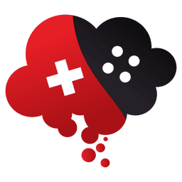
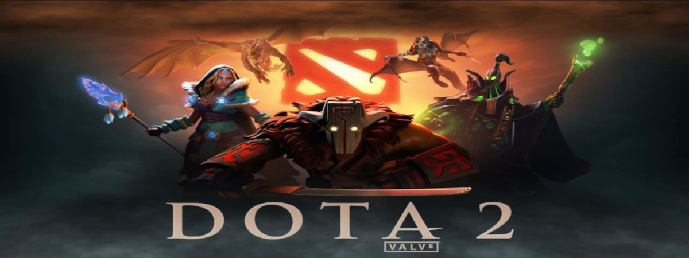

- 


MOBA é um gênero de jogos eletrônicos que mistura elementos de ação, estratégia e RPG (Role Playing Game).
A sigla MOBA vem do inglês “Multiplayer Online Battle Arena” que significa “arena de batalha online para vários jogadores”, nas quais os jogadores dividem-se em times e disputam partidas que duram em média entre 30 minutos à 1 hora.
Apesar de possuir algumas semelhanças, o gênero MOBA não deve ser confundido com o MMO (massive multiplayer online), no qual milhares de jogadores interagem simultaneamente em um mundo online aberto, controlando um único personagem no decorrer de uma campanha com duração indeterminada.
Assim, enquanto o MMO é marcado por “não ter fim”, o MOBA possui um número máximo de jogadores e é definido em partidas curtas nas quais um time sai vencedor. Uma vez que as partidas são concluídas, os jogadores não transferem itens ou personagens para as próximas.
Os jogos MOBA se tornaram muito populares no mundo inteiro e já movimentam milhões de dólares por ano na indústria de eSports (esportes eletrônicos). As competições de jogos MOBA possuem as maiores premiações da indústria e chegaram a distribuir quase 25 milhões de dólares em um único campeonato de Dota 2 em 2017.


Modelo de mapa utilizado como parâmetro em todos os MOBAs atuais, sofrendo pequenas alterações de acordo com o jogo.
A maioria dos MOBAs possuem as mesmas mecânicas e objetivos. Primeiramente, ao entrar na partida, os jogadores escolhem um entre um rol de personagens (ou heróis) disponíveis. Cada personagem possui habilidades, vantagens e desvantagens específicas. É importante que os personagens sejam escolhidos de forma estratégica, de acordo com o papel que cada jogador desempenhará na partida.
O Dota começou como uma modificação do Warcraft 3, criada por utilizadores, e acabou por ser um dos jogos online mais jogados do mundo. Seguindo a tradição do Counter-Strike, Day of Defeat, Team Fortress, Portal e Alien Swarm, o Dota 2 é o resultado da decisão da Valve de contratar os autores do mod e de lhes dar a oportunidade de finalmente criarem um produto final a partir das suas ideias e com a ajuda de uma equipa profissional de programadores e artistas da Valve.
A jogabilidade é um pouco difícil de descrever. A câmara está disposta na perspetiva tradicional dos jogos RTS (Estratégia em Tempo Real), mas não seria justo definir o Dota como um RTS. E apesar de cada herói começar a nível 1, e o limite de nível ser 25, não seria justo dizer que o Dota seja um RPG.
Muitas pessoas tentaram atribuir vários géneros ao Dota, mas achamos que "RTS de Ação" é provavelmente o mais descritivo. E apesar de não passarmos muito tempo a tentar descobrir qual é o género que o jogo está a inventar, não conseguimos parar de jogá-lo nos nossos estúdios!
League of Legends é um jogo eletrônico online gratuito, do gênero batalha multijogador, desenvolvido e publicado pela Riot Games em 2009, para os sistemas Microsoft Windows e Mac OS X, inspirado no modo Defense of the Ancients do jogo Warcraft III: The Frozen Throne.
Heroes of the Storm é um jogo eletrônico de multiplayer online desenvolvido pela Blizzard Entertainment para as plataformas Microsoft Windows e OS X. A base do jogo é uma combinação dos heróis de outros jogos da Blizzard, como os da série Warcraft, Diablo e StarCraft.